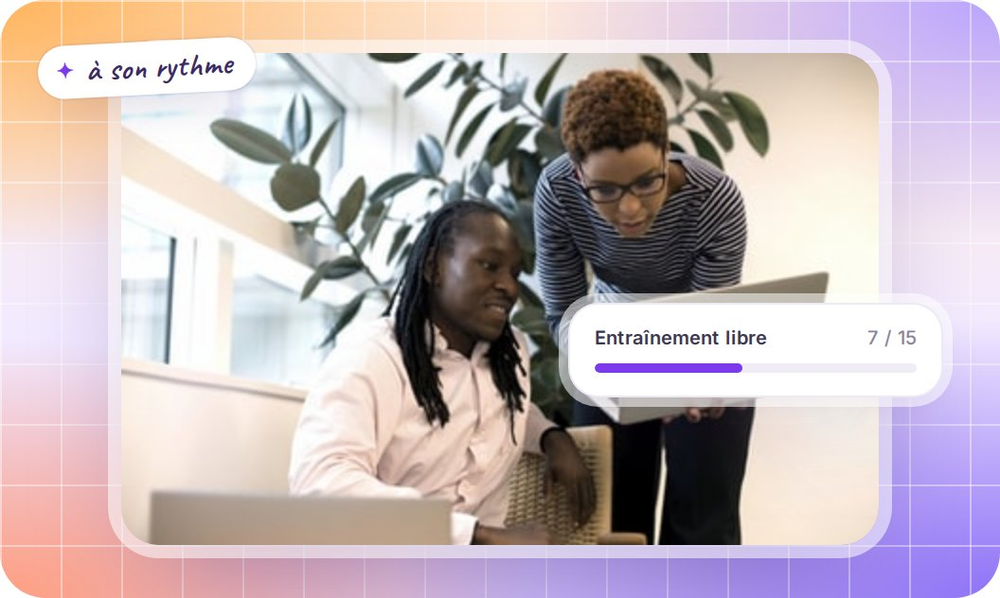
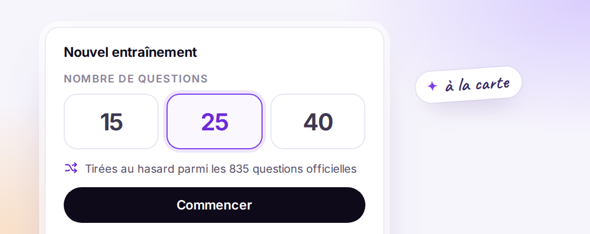
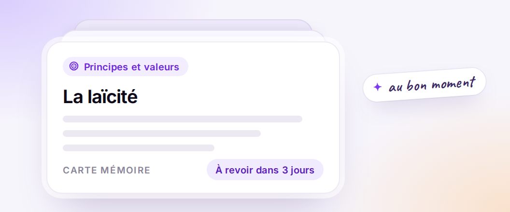

|
|
|
FLE · insertion · primo‑arrivants |
|
L’examen civique
est obligatoire.
Votre préparation
est prête.
L’examen civique est désormais exigé pour les titres de séjour, les cartes de résident
et la naturalisation. Vos stagiaires arrivent avec des niveaux très hétérogènes. Un échec
leur coûte une nouvelle session et retarde leur dossier.
✓ 5 licences offertes ✓ Sans engagement
|

|
835 questions officielles · trois parcours
235 questions Carte de séjour pluriannuelle | | 257 questions Carte de résident | | 343 questions Naturalisation |
|
| |
|

|
Ce que CiviCap fait à votre place
Il fait passer les examens blancs, corrige et explique chaque réponse, et cible les points faibles de chacun. Vos formateurs gardent leur temps pour enseigner.
|
 Entraînement libre 15, 25 ou 40 questions, tirées au hasard parmi les 835 questions officielles. Correction immédiate après chaque réponse. |
 Examen blanc, conditions réelles 40 questions, 45 minutes chronométrées, seuil de réussite à 80 % : exactement le format de l’épreuve officielle. |
 Révision par thème Fiches de révision, cartes mémoire à répétition espacée et entraînement par thème pour cibler les points faibles. |
|
Pilotez la progression
de chaque stagiaire
Vous créez vos stagiaires en quelques clics, par invitation e‑mail. Puis vous suivez leur progression : scores, thèmes faibles, tests passés.
|

|
Des fiches formatives
à télécharger
Une notion par fiche, illustrée et classée par thème : les devoirs du citoyen, le droit des femmes, le Parlement, la Constitution, travailler en France…
|
|
|
|
| |
Ajoutez vos stagiaires
quand vous le voulez.
5 licences offertes pour tester. Ensuite, des licences de 30 ou 90 jours dès 9,00 € HT, sans engagement.
|
|
Se désabonner
· [Raison sociale, adresse postale]
|
|